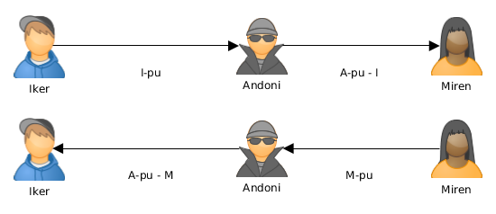
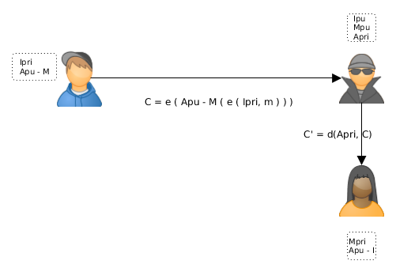

A: zenbat egun pasa diren gakoa aldatu gabe (1970/01/01-tik)
B: zenbat egun gakoa aldatu ahal izateko
C: zenat egun egon ahal den gakoa aldatu gabe
Pasahitzak sistema eragileetan
Linux:
D: zenbat egun aurretik abisatu behar zaio erbiltzaileari pasahitza aldatzeko
E: zenbat egun pasahitza iraungitzetik kontua desaktibatu arte
F: zenbat egun kontua desaktibatu arte (1970/01/01-tik)
Klabe publikoko kriptografia
Gako asimetrikoko algoritmoak: zifratzen duen klabea ez da deszifratzen duena
Erabiltzaile bakoitzak bi klabe:
Gako publikoa, mundu osoak ezagutzen duena
Erabiltzaileak soilik ezagutzen duen gako pribatua
Gako batek zifratzen duena besteak deszifratzen du
Klabe publikoko kriptografia
Klabe publikoko kriptografia
Ikerrek bere gako pribatua du, Ipri, eta mundu guztiak bere gako publikoa du, Ipu
Mirenek bere mezua zifratzen du Ikerren gako publikoa erabiliz: c = e ( m , Ipu )
Mirenek c kriptograma Ikerreri bidaltzen dio
Ikerrek c jasotzen du
Ikerrek c deszifratzen du bere I gako pribatua erabiliz: m = d ( c , Ipri )
Konfidentzialtasuna. Ikerrek soilik deszifratu dezake mezua
Klabe publikoko kriptografia
Abantailak:
Jasotzaileak soilik irakur dezake mezua
Gako bakarra gorde behar da
Edozeinek erabili dezake gako publikoa mezu konfidentziala bidaltzeko Ikerreri
Gako publikoa komunikatzeko ez dira beharrezkoak kanal seguruak
Klabe publikoko kriptografia
Arazoak:
Gako pribatua pribatua mantendu behar da
Gako publikotik gako pribatua ondorioztatzea ia ezinezkoa izan beharko litzateke
(Des)zifraketa sistema simetrikotan baino geldoagoa da
Mirenek segurtasun osoz jakin behar du Ikerren gako publikoa erabiltzen dagoela
Gako publikoak lortzea erraza izan behar du
Klabe publikoko kriptografia
Erabiltzaile bakoitzak bere gako bikotea sortzen du (gako publikoa, gako pribatua) eta gako publikoa gakoen zerbitzari batean argitaratzen du: Key Certification Authority edo Key Distribution Center
(KDC)
Klabe publikoko kriptografia
Arazo gehiago:
¿Cómo sabe Iker si el mensaje es realmente de Miren?
Cuando Iker conteste ¿Cómo sabe Miren que el mensaje
es realmente de Iker?
Klabe publikoko kriptografia
Si Iker lo cifra con su clave privada lo puede descifrar
cualquiera (Ipu la conoce todo el mundo)
Solución:
Iker cifra el mensaje con su clave privada: C1 = e ( m, Ipri )
Luego lo vuelve a cifrar con la clave pública de Miren: C2 = e ( C1 , M pública )
Klabe publikoko kriptografia
Sólo Miren puede desencriptarlo con su clave privada:
Confidencialidad: Sólo Miren puede descifrar el mensaje: C1 = d ( C2 , Mprivada )
Autenticidad y No Repudio: Sólo Iker ha podido enviar el mensaje: m = d ( C1, Ipu )
Klabe publikoko kriptografia
¿Qué ocurre si se interpone alguien en las
comunicaciones?
Ataque Man in the middle:
Un intermediario recibe todos los mensajes sin que las
otras partes se enteren
Se necesita interceptar todas las comunicaciones entre
las dos partes
Klabe publikoko kriptografia
Klabe publikoko kriptografia
Cuando Iker y Miren quieren comenzar a comunicarse
de manera secreta, se intercambian las respectivas
claves públicas
Andoni las intercepta y las intercambia por la suya

Klabe publikoko kriptografia
Iker y Miren cifran sus mensajes con la que CREEN la
clave pública del otro y con su clave privada
Andoni intercepta los mensajes, los lee, modifica y
los encripta con su clave privada
Klabe publikoko kriptografia

Klabe publikoko kriptografia
Iker y Miren creen que están comunicándose de
manera segura
Andoni está enterándose de todo y modificándolo a su
antojo
Formas de evitarlo:
Paso de claves en canales "seguros"
Uso de una autoridad que certifique que una clave
pública pertenece a quien dice: Autoridad de Certificación (AC)
Klabe publikoko kriptografia
Cifrado híbrido
Los sistemas de clave secreta son mucho más rápidos
que los de clave pública
Muchas veces se usa una combinación: El sistema de
clave pública se usa para compartir una clave secreta
S que sólo se usa una vez
El sistema de clave secreta usa S para cifrar el
mensaje
Cifrado híbrido
Miren genera una clave secreta S y cifra su mensaje
usándola: cm = e1 (m,S)
Miren cifra S usando la clave pública de Iker
cs = e2 ( S , Ipu )
Miren manda [ cm, cs ] a Iker
Cifrado híbrido
Cifrado híbrido
Iker recibe [ cm , cs ]
Iker descifra S usando su clave privada Ipri: d2 ( cs , Ipri ) = S
Iker descifra m usando S: d1 ( cm , S ) = m
Cifrado híbrido
Firma digital
Miren le manda un mensaje a Iker usando un sistema
de clave pública
Nadie puede leer el mensaje de Miren a Iker pero
cualquiera podría haberlo mandado
¿Cómo sabe Iker que se lo ha mandado Miren o que
nadie lo ha modificado?
Solución: Miren firma sus mensajes
Firma digital
Sólo el usuario legítimo puede firmar su documento
Nadie podrá falsificar una firma
Cualquiera puede verificar una firma digital
Firma digital
No se puede reutilizar una firma
No se puede modificar una firma
No se puede negar haber firmado un documento
No se puede alterar un documento después de haberlo
firmado
Logramos Autenticidad, Integridad y No repudio
Firma digital
Miren obtiene un resumen criptográfico del mensaje: RC = hash (m)
Miren cifra el resumen criptográfico con su clave: Firma = e ( RC, Mprivada )
Miren envía el mensaje (cifrado o sin cifrar) y su Firma
Firma digital
Firma digital
Iker desencripta la Firma usando la clave pública de Miren: RC = ( Firma, Mpública)
Iker obtiene el resumen criptográfico del mensaje: RC’ = hash (m)
Iker compara RC’ con RC para asegurarse que no ha sido modificado
Firma digital
Firma digital
Si además de firmarlo, Miren encripta su mensaje sólo Iker podrá leerlo: Se logra Confidencialidad, Autenticidad,
Integridad y No Repudio
Puede hacerlo usando:
Un sistema de criptografía asimétrica
Un sistema de criptografía híbrido
Firma digital
Un sistema de criptografía asimétrica. Enviaría a Iker:
Criptograma del mensaje cifrado con Mprivada y con Ipu
Su Firma digital (el resumen criptográfico cifrado con
Mprivada )
Firma digital
Un sistema de criptografía híbrido. Enviaría a Iker:
Criptograma del mensaje cifrado con la clave de sesión
Criptograma con la clave de sesión cifrada con Ipu
Su Firma digital (el resumen criptográfico cifrado con Mprivada)
Algoritmos de clave pública
Diffie-Hellman - 1976
RSA - 1977
ElGamal - 1984
DSA - 1991
Curvas elípticas - 1985
Algoritmos de clave pública
Algoritmos de clave pública
Algoritmos de clave pública
DNI electrónico (DNIe 3.0):
RSA
SHA-1 / SHA-256
TripleDES / AES
Algoritmos de clave pública
PGP:
RSA / DSA
IDEA / TripleDES
Algoritmos de clave pública
SSH:
RSA / DSA
SSL / TLS:
RSA / DSA / Diffie-Hellman
IDEA / DES / TripleDES /AES
Confianza de firmas
Aunque utilicemos firmas digitales:
¿Cómo sabemos que la firma es de quien dice ser?
¿Cómo nos asegura una autoridad de certificación que
una firma es de quien dice ser?
¿No podemos fiarnos de una firma que no esté avalada
por una autoridad de certificación?
Confianza de firmas
Se usa en PGP, GnuPG y similares
Un usuario certifica (firmando con su clave privada)
que la clave pública de otro usuario es de confianza
La confianza se propaga según la confianza que
demos a los usuarios que firmen las claves
Niveles de confianza
Desconocido: no nos fiamos de nada que firme ese
usuario (por desconocimiento)
Ninguno: no nos fiamos de nada que firme ese usuario
(porque sabemos que lo hace mal)
Marginal: nos fiamos de las claves firmadas por dos
usuarios con confianza marginal
Absoluto: nos fiamos de todo lo firmado por ese usuario
Certificados digitales
Un certificado digital consiste en que una entidad “de
confianza” firme mediante su clave privada, la clave
pública de un usuario
Sirve para certificar que el usuario es quien dice ser
Depende de la confianza en la entidad que lo certifica
Certificados digitales
Siguen el estándar X.509
Validez != Confianza
Validez: cumple los requisitos de una firma (caducidad,
etc.)
Confianza: nos podemos fiar de esa firma
Una firma puede ser válida, pero no de confianza
Una firma de confianza que no sea válida no tiene
sentido
Certificados digitales
Una autoridad de certificación (AC) certifica la validez
de una firma
Prestadores de Servicios de Certificación (PSC): Ley de Firma Electrónica (Ley 59/2003, LFE), Ley de Acceso Electrónico de los Ciudadanos a los Servicios Públicos (Ley 11/2007, LAESCP)
Los PSCs deben proporcionar un método de consulta de
la vigencia de sus certificados: Sólo las Administraciones Públicas tienen la obligación de
que sea gratuito